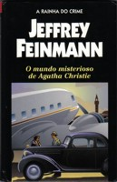

O Mundo Misterioso de Agatha Christie
The Mysterious World of Agatha Christie
Parece indiscutível que uma criadora de mistérios tão fecunda quanto Agatha Christie — chamada com toda a justiça de Rainha do Crime e Duquesa da Morte — deve ser necessariamente uma mulher misteriosa. Esse aspecto ambíguo da personalidade da mais famosa autora de histórias policiais é o tema deste livro apaixonante, cuja leitura é fundamental para todos que queiram saber quem e como era a Sra. Christie, e qual o valor e o verdadeiro sentido de seus romances.
Depois de divorciar-se de um brilhante coronel da Royal Air Force, Dame Christie casou-se com o arqueólogo Max Mallowan, a quem acompanhou em todas as suas expedições ao Oriente Médio. Enquanto seu marido investigava os mistérios do passado remoto, ela criava tramas nas quais os enigmas modernos se ambientavam nos mesmos lugares das escavações — como em Morte no Nilo e Morte na Mesopotâmia. Este é apenas um exemplo do que Jeffrey Feinmann narra em uma obra que hoje é indissociável do nome da imortal Agatha Christie. Um livro de leitura tão empolgante quanto os melhores romances da Rainha do Crime.